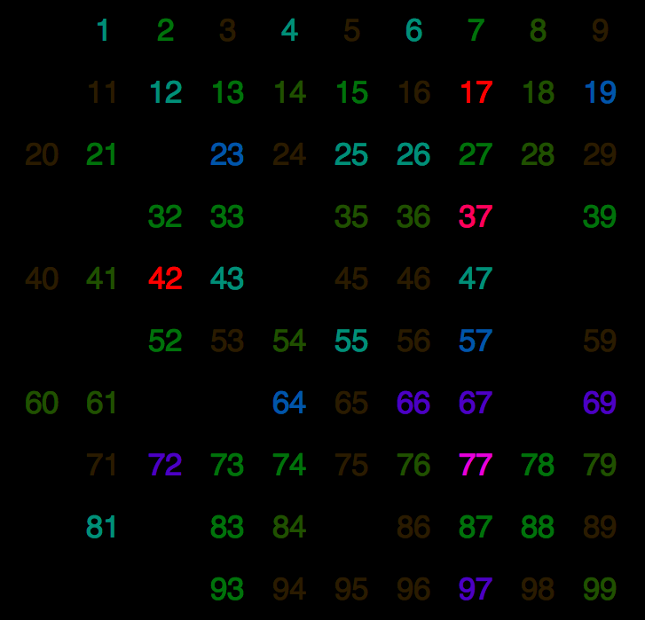

A data set is simply a collection of data points. A data point has a collection of attributes associated with it. One way to think of its a dataset is a table in a database and a data point is a row in that database. One of the elements in that row is an attribute of the data point. Attributes have a type. Here is a list of some major breakdowns of different types given in the book Introduction to Data Mining:1
Taking into account the types of attributes is important in data mining, because eventually all the data is represented by a number in a computer. Let us say that a data point has a color, which is a nominal attribute. There is red, green, blue, and pink. Then you assign each of those colors with the numbers 1, 2, 3, and 4 respectively. Knowing that it is a nominal attribute must be taken into consideration otherwise you might try to compare by finding the difference between 2 and 3. In reality this is trying to quantify the distance between green and blue, which does not make sense.
The data set, which is made up of the attributes and data points, can also be characterized. Here is a list of some of those characteristics summarized from Introduction to Data Mining:
A limitation to data mining is the quality of data used. Many times the data is collected by a person and entered into a database later. The data is subject to human error. Finding and correcting the data can improve the data mining results. Sometimes values are simply missing, other times a value that is not possible for example a person's height being 10 ft. Noise can also affect the data quality. Too much noise and the pattern becomes hidden.
There are different ways to try and clean up the data set to make it suitable for data mining. One of the easiest ways is to simply eliminate a data point from the set. This is however eliminating some useful data. Another way is to try to estimate the missing attribute using a mean median or mode of the data. An interpolation can also be used to estimate the data in between samplings. For those data points that are still used, it is possible to sometimes use algorithms that can ignore the missing or incorrect data. 2
Before doing any mining of data a data scientist should take a look at what data he or she has. Data exploration gives a very high level view of the data and can help in guiding what mining strategies and algorithms will help to produce the best results later on. Data exploration helps to answer the types of questions:
It is also a good idea to get some summary statistics on the data. Summary statistics are some of the most basic measures of data using statistics, such as: frequencies, standard deviation, mean, median, mode, percentiles, range, variance, etc. These statistics alone can sometimes reveal interesting trends in the data and they help to hone your approach in mining the data.
Here is a screen shot of the program Weka providing statistics on the iris data set:
Data visualization is simply displaying the information in a graphical format. During the mining process it is important to visualize the data to help see trends that a computer may not see as easily. After the mining is done visualization is a way for others to easily see the fruits of your data mining. This can help someone else understand the data as well as promote an action to be taken based on what the data is saying.
A common application to do data visualization on is Processing. It uses Java so you have the functionality of any Java library. It makes it very easy to visualize data as well as interact with the data.
The image below was made using processing to visualize human generated random numbers. The more opaque a number is the more times it was "randomly" selected by a human. Notice how easy it is to see that any number ending with a 7 was selected more often.3
1 Tan, Pang-Ning, Michael Steinbach, and Vipin Kumar. Introduction to Data Mining. Boston: Addison Wesley, 2006.
1 Segaran, Toby, and Jeff Hammerbacher. Beautiful Data: The Stories Behind Elegant Data Solutions. 1st. Beijing: O'Reilly, 2009.
3 http://blog.blprnt.com/blog/blprnt/your-random-numbers-getting-started-with-processing-and-data-visualization